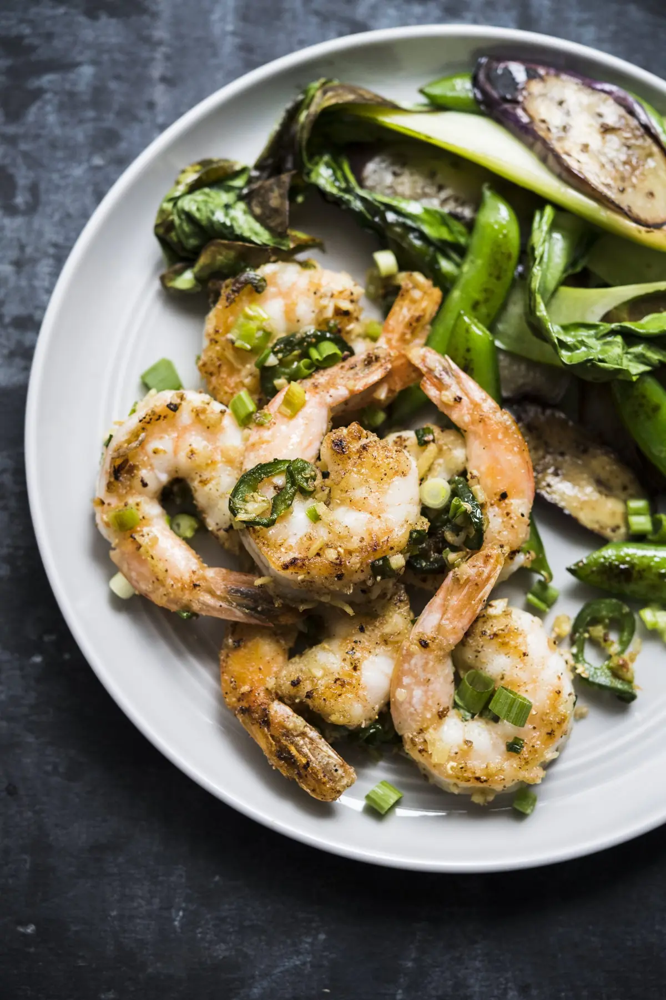

Salt and Pepper Shrimp
- Total time45 mins
- Serves4
- Ingredients11
- Steps3

Ingredients
- 1 1/2 pounds jumbo shrimp, peeled and deveined, tails left on
- 2 teaspoons Sichuan peppercorns
- 1 teaspoon white peppercorns
- Kosher salt
- 2 tablespoons cornstarch
- 1 teaspoon white sugar
- 4 tablespoons grapeseed or other neutral oil, divided
- 1 large jalapeño or 2 serrano chiles, stemmed and thinly sliced crosswise into rings
- 6 medium garlic cloves, finely chopped
- 1/4 cup finely chopped peeled fresh ginger
- 1 bunch scallions, thinly sliced
Directions
- Pat the shrimp dry with paper towels and place in a large bowl. Use a spice grinder to grind the Sichuan and white peppercorns until medium-fine (about the coarseness of kosher salt). Transfer to a small bowl and stir in 1 1/2 teaspoons salt. In another small bowl, stir together 2 teaspoons of the pepper mixture, the cornstarch and sugar, then sprinkle over the shrimp and toss. Set the remaining pepper mixture aside.
- Line a baking sheet with paper towels. In a 12-inch nonstick skillet over medium-high, heat 1 tablespoon of the oil until barely smoking. Add half of the shrimp in an even layer and cook without stirring until deep golden brown, 1 to 2 minutes. Using tongs, flip and continue to cook until the second side is opaque, another 20 to 30 seconds. Transfer to the prepared baking sheet. Repeat with 1 tablespoon of the remaining oil and the remaining shrimp. Do not wash the skillet.
- In the same skillet over medium-high, heat the remaining 2 tablespoons oil until shimmering. Add the jalapeño and cook, stirring, until the seeds begin to brown, about 1 minute. Add the gralic, ginger, and all but 3 tablespoons of the scallions. Cook, stirring constantly, until the scallions and ginger have softened, about 2 minutes. Return the shrimp to the skillet and toss, then stir in the reserved spice mixture. Transfer to a platter and sprinkle with the remaining scallions.
Recipe credit: 177milkstreet.com and Milk Street Tuesday Nigths by Christopher Kimball